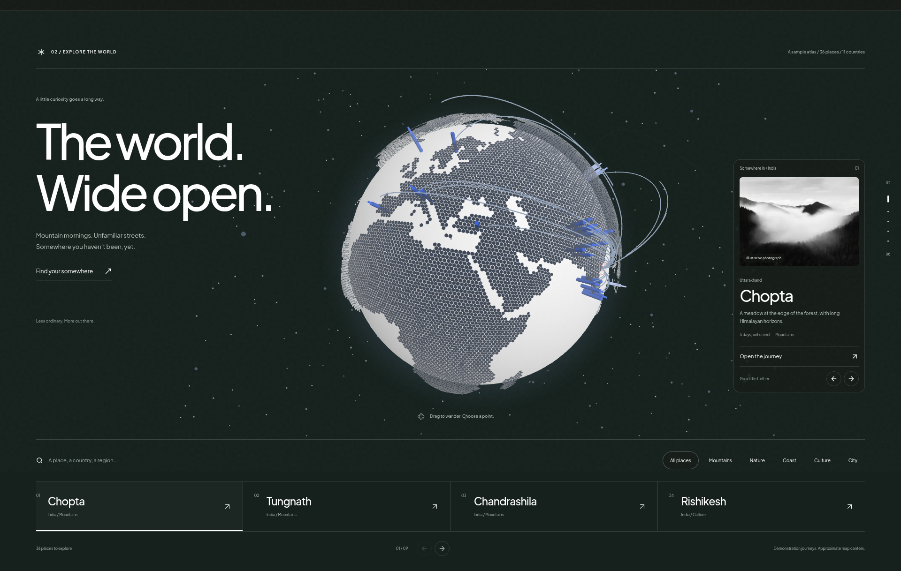
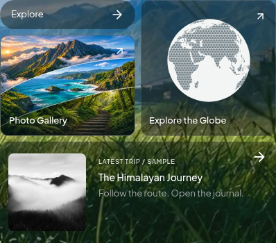
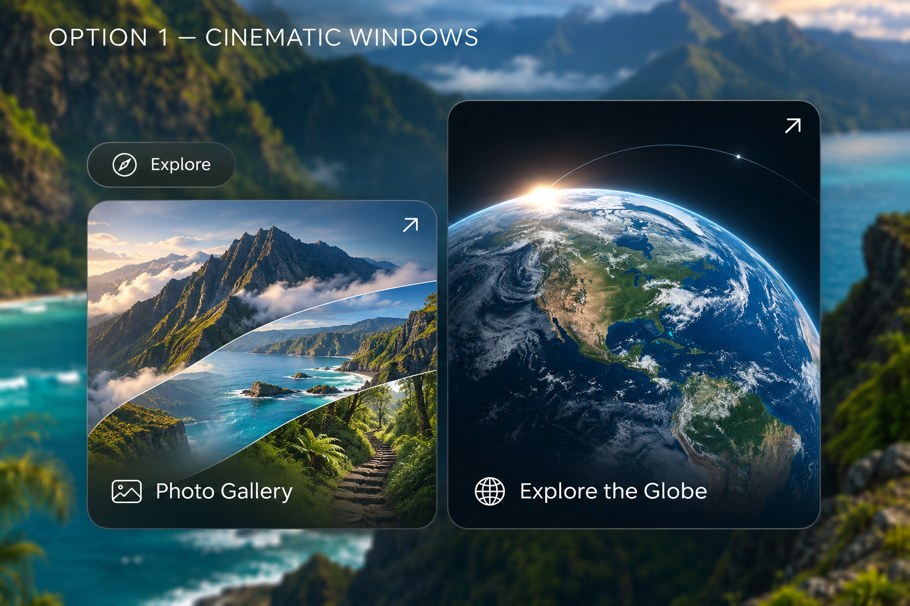
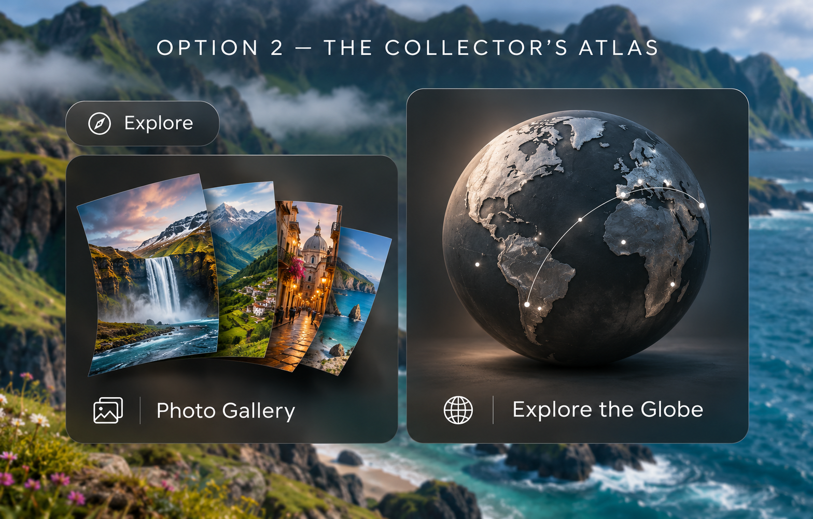
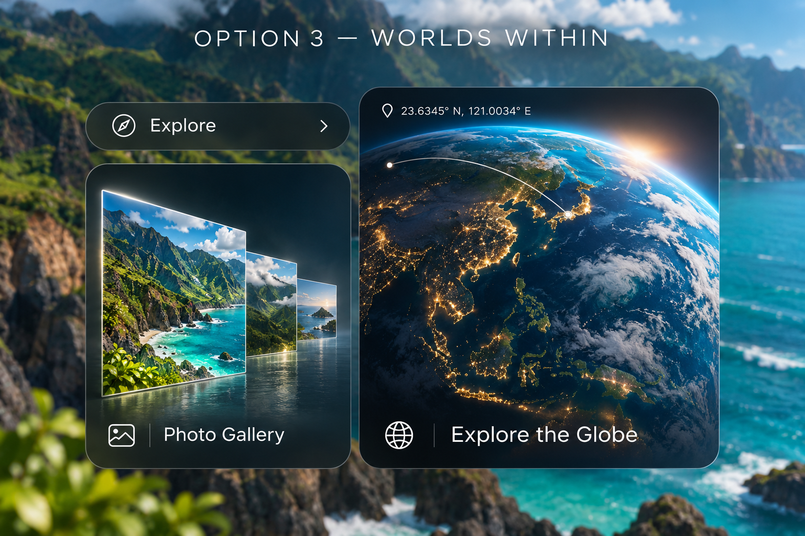

The world, taking shape.
The current globe section and hero discovery cards, followed by the earlier card concepts. Rendered previews use clearly labelled demonstration journeys.
Download all three designs as PDFThe globe — The world, wide open.
Rendered desktop and mobile layouts. The original interactive globe is surrounded by white editorial type, a destination preview, search and a place browser.

View the full mobile layout · Explore the live globe section

Current implementation — Trip photos & illustrated globe
Rendered website preview with demonstration data. The gallery uses photographs from two different trip journals, and the earlier illustrated globe card is restored. The original interactive globe is still available through the card link.

1 — Cinematic Windows


2 — The Collector’s Atlas


3 — Worlds Within
